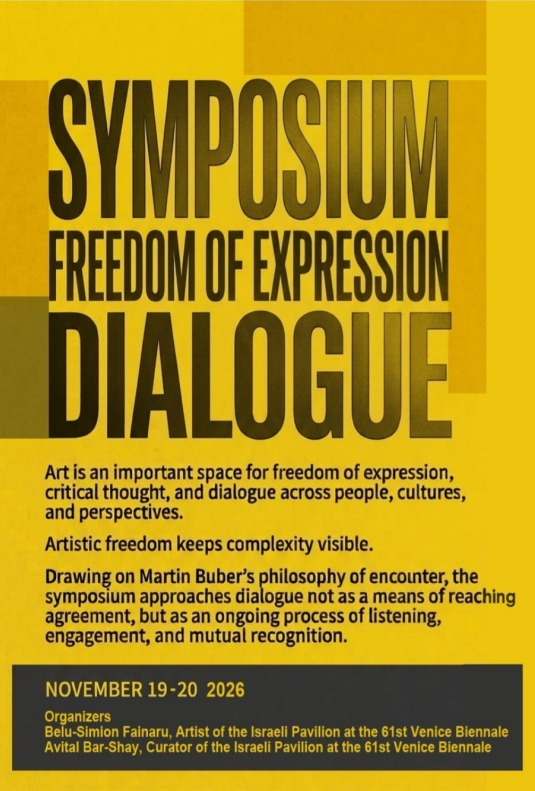
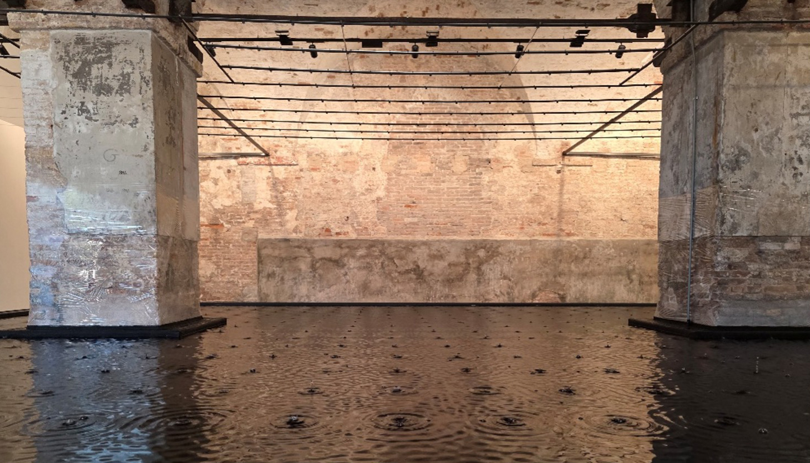

Artistic freedom
Freedom of expression and the role of art in the public sphere.
Online symposium · 19–20 November 2026
“All real living is meeting.” — Martin BuberWatch the livestream

01The symposium
Art is an important space for freedom of expression, critical thought and dialogue across people, cultures and perspectives. It allows us to question assumptions, challenge conventions and explore ideas that resist fixed interpretation.
Art does not emerge in isolation. It develops through encounters with different cultures, traditions and ways of understanding the world—opening new possibilities for expression and pushing us beyond the limits of our own perspective.
This is especially true in times of conflict, crisis and polarization, when public discourse grows increasingly divided and complexity is the first casualty. Artistic freedom keeps that complexity visible. It makes room for diverse voices and forms of engagement that move beyond familiar narratives, fixed identities and predetermined conclusions.
Taking place online on November 19–20, 2026, the symposium brings together artists, curators, scholars and cultural practitioners for lectures, panel discussions and roundtable conversations. Together they will explore artistic freedom, democracy, human rights, intercultural dialogue and artistic practice in times of crisis.
Symposium topics
Freedom of expression and the role of art in the public sphere.
Artistic practice as a form of reflection, participation and responsibility.
Exchange across cultural, social and geographical boundaries.
Creating and sustaining dialogue during conflict and polarization.
02
Public broadcast
The symposium is broadcast publicly on YouTube. Viewers can take part through the live chat; selected questions will be brought into the conversation by the moderator.

Rose of Nothingness, Israeli Pavilion, 2026 Public viewing · no Zoom registration required
03
Across disciplines and borders
Artists, curators, scholars and cultural practitioners join the conversation from Europe, Israel, the Americas and China.
04
Initiated by
Artist and professor
Professor at the University of Haifa and artist of the Israeli Pavilion at the 61st Venice Biennale in 2026. He represented Romania at the 58th Venice Biennale in 2019.
Curator
Curator of the Israeli Pavilion at the 61st Venice Biennale in 2026.
Questions about the symposium? Write an email or send a WhatsApp message.